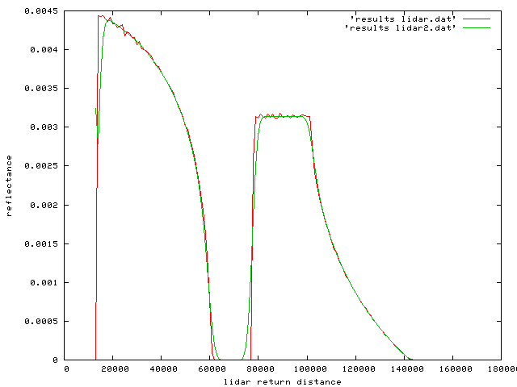
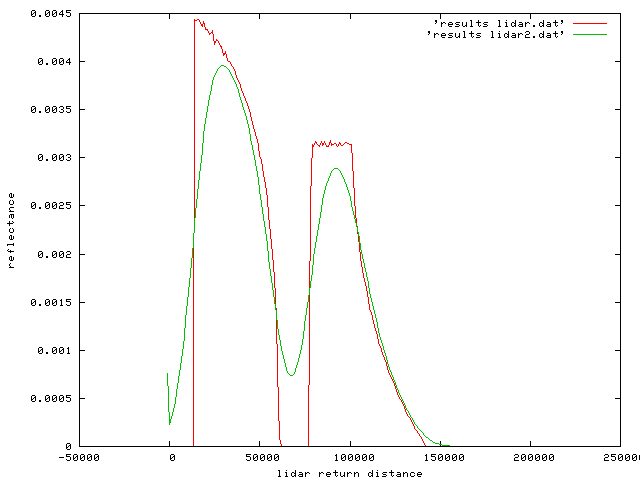
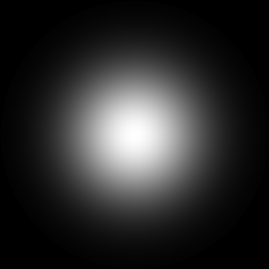
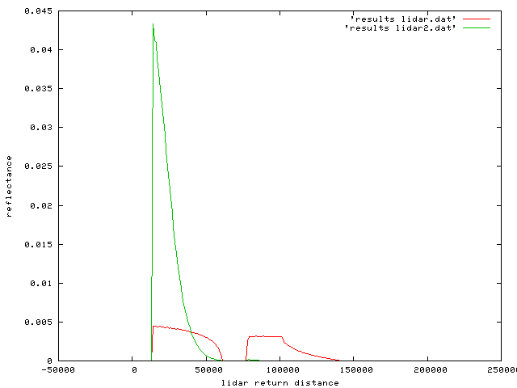

[previous] [next]
Some options for lidar processing
Some options you might want to consider for lidar simulations:
Lidar pulse
This is achieved by specifying (e.g. light3.dat). This is the same as light1.dat, except a lidar pulse is specified:
# start of pulse: make this half the pulse length for a Gaussian
lidar.pulseStart = 5000;
# shape of pulse (square or gaussian
lidar.pulseForm = "gaussian";
# how much of a Gaussian?
lidar.pulseSD = 3.0;
# length of pulse
lidar.pulseLength = 10000.0;
# number of samples for discrete representation
lidar.pulseSamples = 100;
# filename in case want to store representation
lidar.pulseOPFile = "pulse.dat";
This is run with:
echo 14 camera3.dat light3.dat | start -v -sensor_wavebands wavebands.dat -m 1 -black test.obj
And gives:

which is of course a smoothed vesrion of the original signal (original shown in red).
If we use a much longer pulse of e.g. 50000, we get a much more blurred signal.
echo 14 camera4.dat light4.dat | start -v -sensor_wavebands wavebands.dat -m 1 -black test.obj

N.B. In the lidar output, the first and last entries (in image files of integral ASCII files) are underflow and overflow bins. This is particularly apparent when the long pulse is used above: the underflow bin here is less than 0.0 (a small upward tick).
Point spread function of camera and/or illumination
We would typically define some PSF (MTF) on the lidar illumination or reciever. This is achieved via:
samplingPattern.form = "gaussian";
samplingPattern.size = 1200, 1200;
samplingPattern.sd = 3,3;
samplingPattern.centre = 600, 600;
# a threshold can be applied
# everything below this is set to zero
# the gaussian function used is:
# G = exp(-X^2/(2 sdx^2)) * exp(-Y^2/(2*sdy^2))
# where X = x - cx
# so eg to threshold at 3 sd:
# X/sdx = 3
samplingPattern.threshold = .01111;
The Gaussian MTF can be output by specifying e.g. samplingPattern.OPImage = "opGaussian.hips".

The Gaussian can in some cases dramatically change the form of the output waveform (see below), but the impact will normally be quite minor for small field of view instruments.

[previous] [next]